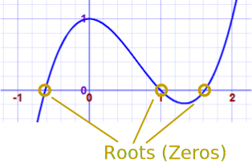
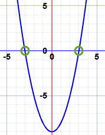
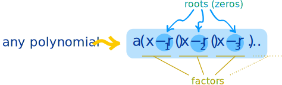
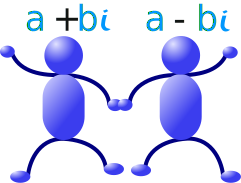
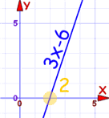
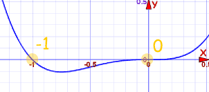

Fundamental Theorem of Algebra
The "Fundamental Theorem of Algebra" is not the start of algebra or anything, but it does say something interesting about polynomials:
Any polynomial of degree n has n roots
but we may need to use complex numbers
Let me explain:
A Polynomial looks like this:
 |
| example of a polynomial this one has 3 terms |

A "root" (or "zero") is where the polynomial is equal to zero.

So, a polynomial of degree 3 will have 3 roots (places where the polynomial is equal to zero). A polynomial of degree 4 will have 4 roots. And so on.
Example: what are the roots of x2 − 9?
x2 − 9 has a degree of 2 (the largest exponent of x is 2), so there are 2 roots.
Let us solve it. We want it to be equal to zero:
Add 9 to both sides:
Then take the square root of both sides:
So the roots are −3 and +3

And there is something else of interest:
A polynomial can be rewritten like this:

Example: x2 − 9
The roots are r1 = −3 and r2 = +3 (as we discovered above) so the factors are:
(in this case a is equal to 1 so I didn't put it in)
The Linear Factors are (x+3) and (x−3)
So knowing the roots means we also know the factors.
Here is another example:
Example: 3x2 − 12
It is degree 2, so there are 2 roots.
Let us find the roots: We want it to be equal to zero:
3 and 12 have a common factor of 3:
We can solve x2 − 4 by moving the −4 to the right and taking square roots:
So the roots are:
x = −2 and x = +2
And so the factors are:
3x2 − 12 = 3(x+2)(x−2)
Likewise, when we know the factors of a polynomial we also know the roots.
Example: 3x2 − 18x + 24
It is degree 2 so there are 2 factors.
3x2 − 18x + 24 = a(x−r1)(x−r2)
I just happen to know this is the factoring:
3x2 − 18x + 24 = 3(x−2)(x−4)
And so the roots (zeros) are:
- +2
- +4
Let us check those roots:
3(2)2 − 18(2) + 24 = 12 − 36 + 24 = 0
3(4)2 − 18(4) + 24 = 48 − 72 + 24 = 0
Yes! The polynomial is zero at x = +2 and x = +4
Complex Numbers
We may need to use Complex Numbers to make the polynomial equal to zero.
A Complex Number is a combination of a Real Number and an Imaginary Number
And here is an example:
Example: x2−x+1
Can we make it equal to zero?
x2−x+1 = 0
Using the Quadratic Equation Solver the answer (to 3 decimal places) is:
| 0.5 − 0.866i | and | 0.5 + 0.866i |
They are complex numbers! But they still work.
And so the factors are:
x2−x+1 = ( x − (0.5−0.866i ) )( x − (0.5+0.866i ) )
Complex Pairs
So the roots r1, r2, ... etc may be Real or Complex Numbers.
But there is something interesting...
Complex Roots always come in pairs!

You saw that in our example above:
Example: x2−x+1
Has these roots:
| 0.5 − 0.866i | and | 0.5 + 0.866i |
The pair are actually complex conjugates (where we change the sign in the middle) like this:
Always in pairs? Yes (unless the polynomial has complex coefficients, but we are only looking at polynomials with real coefficients here!)
So we either get:
- no complex roots
- 2 complex roots
- 4 complex roots,
- etc
And never 1, 3, 5, etc.
Which means we automatically know this:
| Degree | Roots | Possible Combinations |
|---|---|---|
| 1 | 1 | 1 Real Root |
| 2 | 2 | 2 Real Roots, or 2 Complex Roots |
| 3 | 3 | 3 Real Roots, or 1 Real and 2 Complex Roots |
| 4 | 4 | 4 Real Roots, or 2 Real and 2 Complex Roots, or 4 Complex Roots |
| etc | etc! |
And so:
When the degree is odd (1, 3, 5, etc) there is at least one real root ... guaranteed!
Example: 3x−6
The degree is 1.
There is one real root
At +2 actually:
:
You can actually see that it must go through the x-axis at some point.
But Real is also Complex!
I have been saying "Real" and "Complex", but Complex Numbers do include the Real Numbers.
So when I say there are "2 Real, and 2 Complex Roots", I should be saying something like "2 Purely Real (no Imaginary part), and 2 Complex (with a non-zero Imaginary Part) Roots" ...
... but that is a lot of words that sound confusing ...
... so I hope you don't mind my (perhaps too) simple language.
Don't Want Complex Numbers?
If we don't want Complex Numbers, we can multiply pairs of complex roots together:
(a + bi)(a − bi) = a2 + b2
We get a Quadratic Equation with no Complex Numbers ... it is purely Real.
That type of Quadratic (where we can't "reduce" it any further without using Complex Numbers) is called an Irreducible Quadratic.
And remember that simple factors like (x-r1) are called Linear Factors
So a polynomial can be factored into all Real values using:
- Linear Factors, and
- Irreducible Quadratics
Example: x3−1
x3−1 = (x−1)(x2+x+1)
It has been factored into:
- 1 linear factor: (x−1)
- 1 irreducible quadratic factor: (x2+x+1)
To factor (x2+x+1) further we need to use Complex Numbers, so it is an "Irreducible Quadratic"
How do we know if the Quadratic is Irreducible?
Just calculate the "discriminant": b2 - 4ac
(Read Quadratic Equations to learn more about the discriminant.)
When b2 − 4ac is negative, the Quadratic has Complex solutions,
and so is "Irreducible"
Example: 2x2+3x+5
a = 2, b = 3, and c = 5:
b2 − 4ac = 32 − 4×2×5 = 9−40 = −31
The discriminant is negative, so it is an "Irreducible Quadratic"
Multiplicity
Sometimes a factor appears more than once. That is its Multiplicity.
Example: x2−6x+9
x2−6x+9 = (x−3)(x−3)
"(x−3)" appears twice, so the root "3" has Multiplicity of 2
The Multiplicities are included when we say "a polynomial of degree n has n roots".
Example: x4+x3
There should be 4 roots (and 4 factors), right?
Factoring is easy, just factor out x3:
x4+x3 = x3(x+1) = x·x·x·(x+1)
there are 4 factors, with "x" appearing 3 times.
But there seem to be only 2 roots, at x=−1 and x=0:

But counting Multiplicities there are actually 4:
- "x" appears three times, so the root "0" has a Multiplicity of 3
- "x+1" appears once, so the root "−1" has a Multiplicity of 1
Total = 3+1 = 4
Summary
- A polynomial of degree n has n roots (where the polynomial is zero)
- A polynomial can be factored like: a(x−r1)(x−r2)... where r1, etc are the roots
- Roots may need to be Complex Numbers
- Complex Roots always come in pairs
- Multiplying a Complex pair gives an Irreducible Quadratic
- So a polynomial can be factored into all real factors which are either:
- Linear Factors or
- Irreducible Quadratics
- Sometimes a factor appears more than once. That is its Multiplicity.